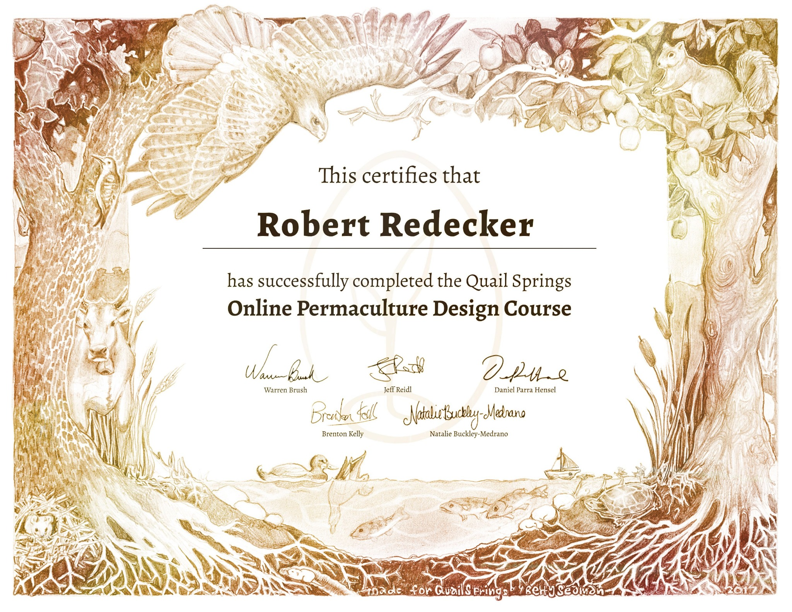
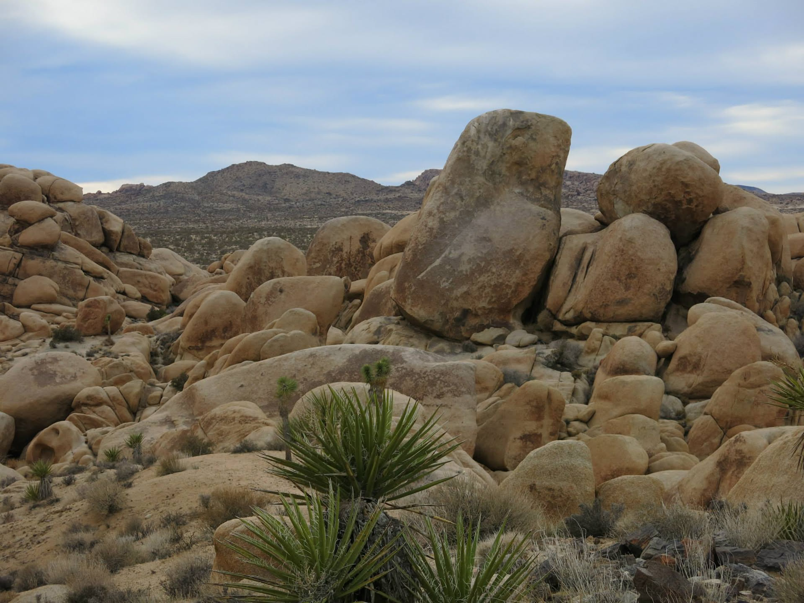
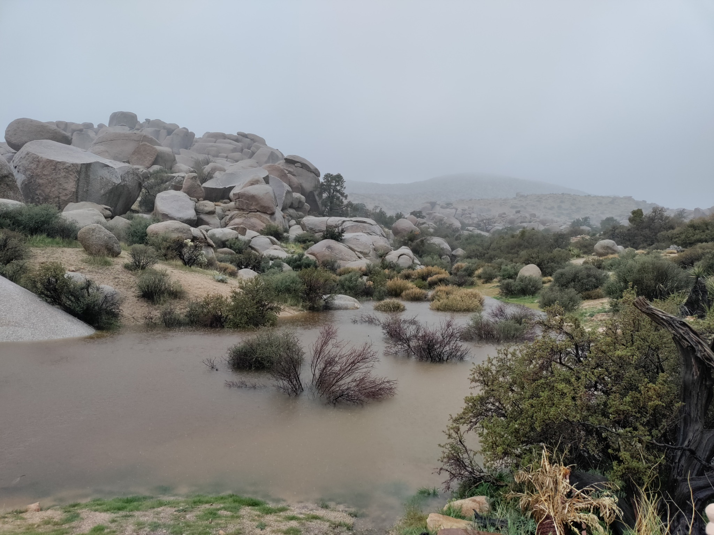
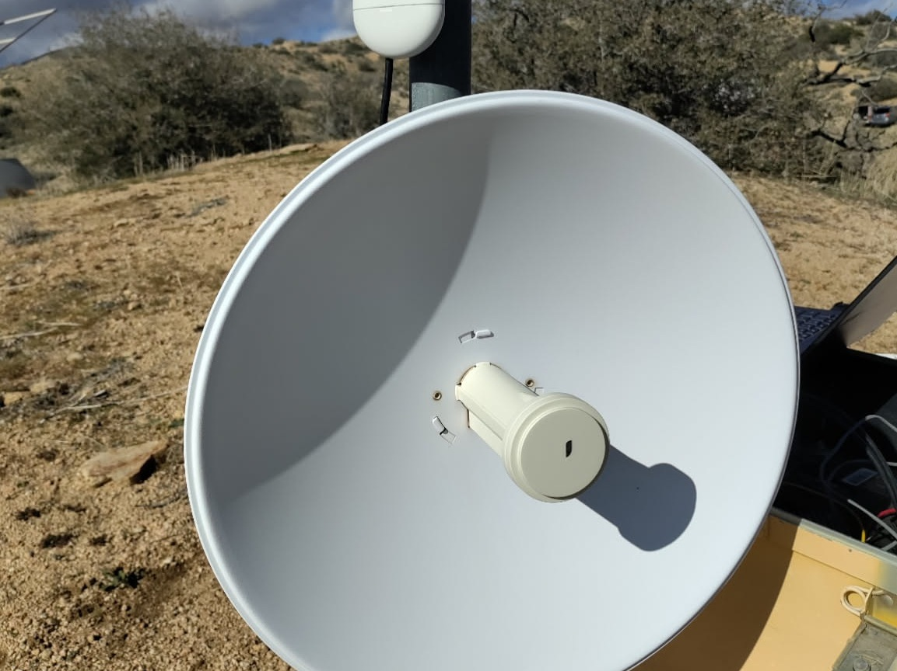
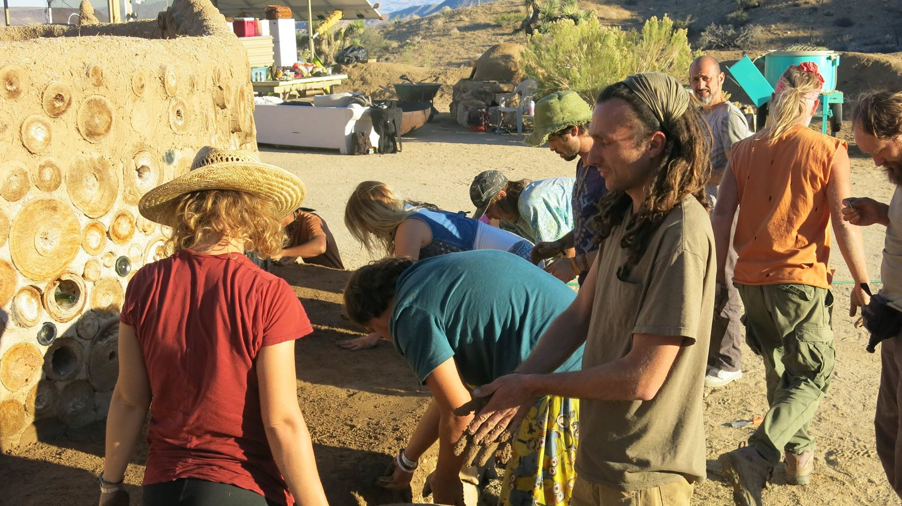

Water · Village Water Tank
Water Wasted
Continuous tank-level observations beginning in mid-August provided the first useful picture of everyday water consumption at Boulder Gardens.
Read the full observation →Notes from a Living Desert Sanctuary
A growing record of the land, off-grid systems, communications, experiments, repairs, and everyday observations at Boulder Gardens Sanctuary.
Read the field reports
Permaculture Background
Robert Redecker is a trained and certified Permaculturist. His work at Boulder Gardens brings permaculture design into direct conversation with desert conditions: water, soil, energy, shelter, communications, community, habitat, repair, and the long-term observation of a particular piece of land.
Formal training is one strand of that practice. The larger record is the continuing process of trying ideas on the ground, documenting what works, revising what does not, and allowing the sanctuary itself to become a teacher.

Latest Observation

Water · Village Water Tank
Continuous tank-level observations beginning in mid-August provided the first useful picture of everyday water consumption at Boulder Gardens.
Read the full observation →Explore the Journal
Water, desert ecology, energy, communications, wildlife and community are woven together throughout the sanctuary.
 01
01
Place, history, spaces and everyday life.
Explore → 02
02
Social permaculture, gatherings, shared work and stewardship.
Explore →
03Desert ecology, wildlife, geology, weather and seasonal change.
Explore →
04Springs, wells, storage, movement and monitoring.
Explore → 05
05
Solar arrays, batteries, generators and off-grid power.
Explore →
06Internet, radio, Wi-Fi, fiber, Ethernet and Meshtastic.
Explore → 07
07
Measurements, instruments, Home Assistant and field data.
Explore →
08Experiments, construction, repairs and systems in progress.
Explore →Observe what is here.
Record what changes.
Keep the evidence.
The Fieldstation is not a conventional blog. Public reports remain brief and visual. Detailed specifications, source photographs, corrections, and unresolved questions are preserved separately in the master workbook.
Over time, the short reports and deeper records become a history of how the sanctuary works—and how it changes.

“A place becomes legible when we pay attention long enough.”
Boulder Gardens Fieldstation